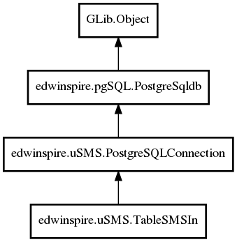

TableSMSIn
Object Hierarchy:

Description:
public class TableSMSIn :
PostgreSQLConnection
Namespace: edwinspire.uSMS
Package: libspire_usms
Content:
Creation methods:
Methods:
- public
string fun_view_smsin_table_filter_xml (string start, string end, int rows, bool fieldtextasbase64 = true)
- public
int fun_smsin_insert (int inidport, SMS_Status instatus, Datetime indatesms, string inphone, string inmsj, string innote = "")